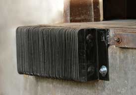
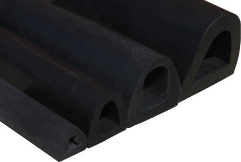
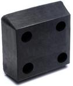

Dock Bumpers
Loading Dock Bumpers are used for building and equipment protection. Choose from: Laminated Dock Bumpers, Extruded Dock Bumpers, or Molded Dock Bumpers.

Laminated Dock Bumpers
Laminated Dock Bumpers are maintenance free, weather resistant, and prevent damage to trucks, loading docks, and buildings by providing protection against impact of the trailer backing into the Dock Sill.

Extruded Dock Bumpers
Extruded Dock Bumpers are appropriate for outdoor or indoor protection. Use them for commercial loading docks, parking garages, and marinas. Extruded dock bumpers are also used on tow trucks, trailers and heavy duty construction equipment.

Molded Dock Bumpers
Molded dock bumpers are great for low traffic dock applications and can be ordered in many different sizes.